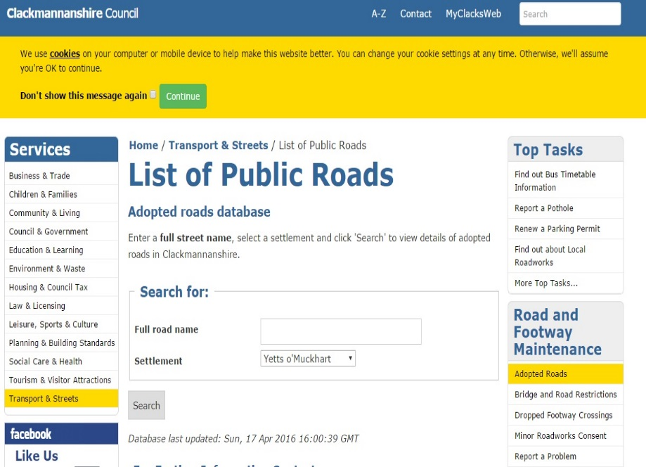
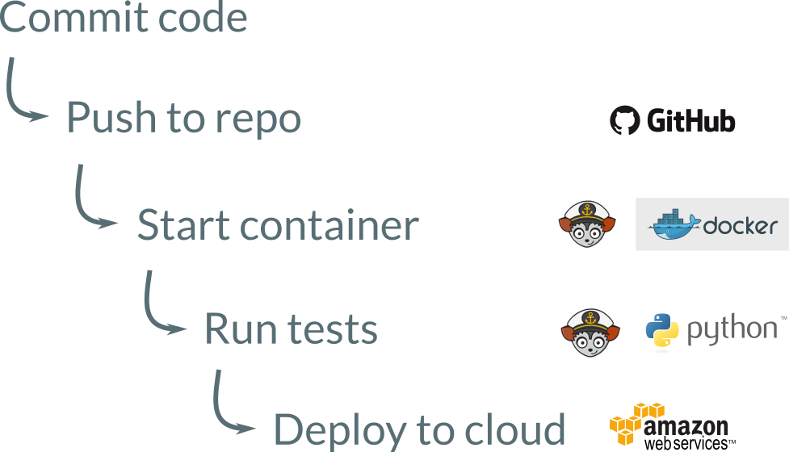

Contents
Roads database management
- Why do we need a roads database?
- roadNet
Development and technical overview
- Cloud repository (Part 1)
- SQLite for data storage
- Automatic database updates
- Cloud repository (Part 2)
Local Street Gazetteer
So we know our address
Scottish Roadworks Register
So work can be arranged and coordinated
List of Public Roads

So we know what is maintained by the local authority
Cloud deployment

Test edit: Insert number + verb + animal